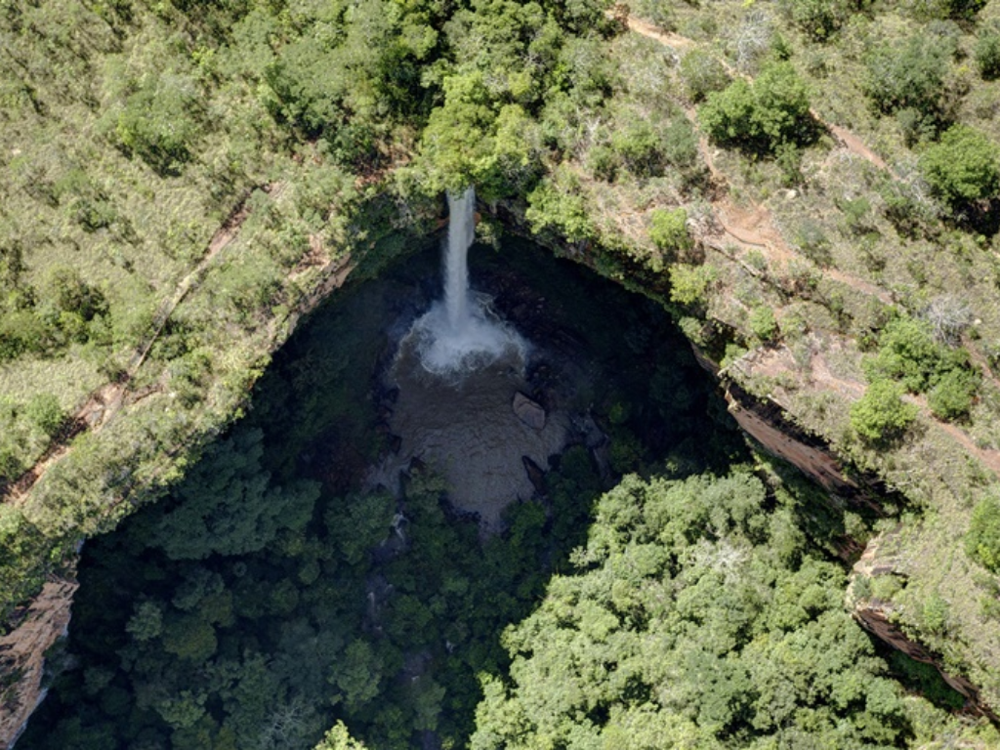

Mato Grosso é um dos maiores estados do Brasil em extensão territorial e possui como capital Cuiabá. O estado apresenta grande diversidade natural, com áreas do Pantanal, Cerrado e Amazônia, além de forte economia voltada para a agricultura e pecuária, especialmente na produção de soja e algodão.

Voltar